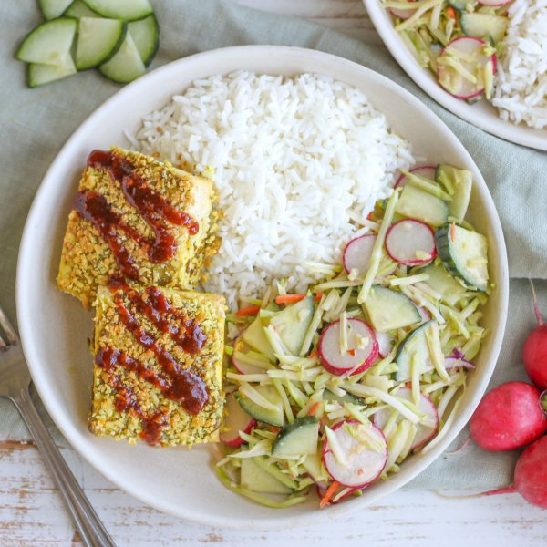

Japanese-Style Breaded Tofu (Katsu) with Sesame Veggie Slaw & Rice

Nutrition (per serving)
698.2 kcalCalories
27.5 gProtein
71 gCarbs
36.7 gFat
Full nutrition table
| Calories | 698.2 kcal |
| Total fat | 36.7 g |
| Saturated fat | 5.2 g |
| Trans fat | 0.1 g |
| Cholesterol | 13.7 mg |
| Sodium | 358.9 mg |
| Carbohydrates | 71 g |
| Fiber | 6.3 g |
| Sugars | 12.5 g |
| Protein | 27.5 g |
| Potassium | 968 mg |
| Calcium | 426.6 mg |
| Iron | 7.7 mg |
| Vitamin A | 563.7 IU |
| Vitamin C | 92.7 mg |
| Vitamin D | 2.8 IU |
Cookware
Ingredients
- 1 (12 oz) pkgbroccoli slaw
- 1English cucumber
- 2 (12 oz) pkgsextra firm tofu
- 1 cupjasmine rice
- 1 bunchradish
- black pepper
- chili-garlic sauce
- curry powder
- garlic powder
- ketchup
- mayonnaise
- panko bread crumbs
- pure maple syrup
- rice vinegar
- salt
- soy sauce
- toasted sesame oil
Steps
- Preheat oven to 400°F.
- Cut tofu in half along the long side. Sandwich tofu between clean towels or paper towels and place on a baking sheet pan. Place a cutting board with something heavy on top and set aside to press out excess water.2 (12 oz) pkg extra firm tofu
- Using a strainer or colander, rinse the rice under cold, running water, then drain and transfer to a medium saucepan. Add water and salt, then bring the mixture to a boil over high heat.1 cup jasmine rice
2 cup water
¼ tsp salt - Meanwhile, place mayo and spices in a small bowl. Whisk to combine the curried mayo.¼ cup mayonnaise
1 ½ tsp curry powder
½ tsp salt
½ tsp black pepper - Once the liquid comes to a boil, stir the mixture, cover the saucepan, and reduce heat to low. Cook rice until liquid is fully absorbed, 15-18 minutes. Once done, remove rice from the heat and let it stand, still covered, for 5 minutes.
- While the rice is cooking, cut the tofu planks in half crosswise and return to the baking sheet.
- Spread half of the curried mayo over the top side of the tofu, sprinkle with half of the bread crumbs (pressing gently to adhere), and drizzle with half of the oil. Carefully flip tofu and repeat with remaining mayo, bread crumbs, and oil. (Reserve bowl for later use.)1 cup panko bread crumbs
4 tsp toasted sesame oil - Place tofu in the oven and bake, turning halfway through, until the breading is crispy and golden brown, 15-18 minutes. Remove from oven.
- Meanwhile, place ketchup, soy sauce, maple syrup, chili-garlic sauce, and garlic powder in the reserved bowl. Whisk to combine the "tonkatsu" sauce and set aside.¼ cup ketchup
2 tbsp soy sauce
1 tbsp pure maple syrup
2 tsp chili-garlic sauce
½ tsp garlic powder - Place additional mayo, vinegar, soy sauce, oil, and chili-garlic sauce in a medium bowl. Whisk to combine the dressing.2 tbsp mayonnaise
4 tsp rice vinegar
4 tsp soy sauce
1 tbsp toasted sesame oil
2 tsp chili-garlic sauce - Wash, dry, trim, and quarter cucumber lengthwise, then cut crosswise into thin pieces. Add to the bowl with the dressing.1 English cucumber
- Wash, dry, trim, and thinly slice radishes. Add to the bowl, along with the broccoli slaw, and toss to combine.1 bunch radish
1 (12 oz) pkg broccoli slaw - To serve, divide rice, tofu, and slaw between plates or bowls; drizzle sauce over tofu and enjoy!